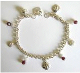

Sixth grade (1951-52)
As my first summer on the farm drew to a close in the waning days of August of '51, I had to face the prospects once again of being the new kid in a new school. The school system of Caney had three buildings for grades 1st through 6th: Washington, Lincoln, and McKinley. My brother Gary and I went to Washington because it was on the west side of town, and therefore close to the farm. The red brick building occupied the center of a full city block, with two levels for the six classrooms, and a semi-basement below. It was surrounded by a generous amount of playground space, and had many of the typical items of play equipment like, swings, merry-go-rounds, slides, and teeter totters. There were also two baseball diamonds on the west side. We always had a great time during recess, or before classes began, getting all the exercise that young, growing bodies need.
My classroom was on the top floor at the northeast corner. Gary's third grade room was on the middle level, southwest corner. His teacher, Mrs. Ruth Dow, doubled as the building principal. My teacher's name was Mrs. Lois Durschel. There are two main reasons why I'll always remember this teacher. The first was that every day when we students entered her room after lunchtime recess, she would take out a book and read to us for a few minutes. I imagine this was her way of letting us cool down and get ready for our academic subjects. She always chose a book that would be of high interest for us. One book in particular impacted me greatly. It was Lad: A Dog, a classic in children's literature. (See picture of book cover.) Though I have forgotten the details of the story about this heroic collie, I would relate it to my own dog, Sandy, who awaited me every day when I went home. Though she read another book about a dog named Bruce, and other books of different types, as far as I was concerned, only Lad mattered to me. I was one sad little boy when this book came to an end.
The other reason? Well, Mrs. Durschel had a daughter, named Patty. She was, of course, a student in her mother's room. And she just happened to be cute and perhaps the most popular girl in class. Several of us boys must have thought so anyway, as we were always trying to curry her favor by giving her little gifts. Many of the girls liked to wear charm bracelets on their wrists or ankles. The girls bought their bracelets and the boys showered the girls with little charms, in the forms of hearts, keys, and other such trifles. (See illustration at left.) They were often nothing more than mere plastic items that one might buy in the 1¢ gumball machines in variety stores. But they brought the desired I-like-you-too effect in the eyes of the recipient. Pity the young suitor who couldn't present many charms to the girl of his dreams. He just had to stand on the side-lines, defeated. By the way, dear reader, you know who I'm talking about now, don't you? Me. Yes, my grandmother didn't believe in such frivolity and wouldn't give me money to buy those items. But somehow Larry Haygood obtained the necessary money. Oh, how I seethed in the background as I watched him award Patty with numerous plastic doo-dads to add to her collection. I don't think I ever really liked Larry after that. Can you blame me?
Washington School, being on the western edge of the town, was not too terribly far from the farm. So whenever the weather was nice, my brother and I rode our bicycles to school. We even rode back home during lunch period as well. Otherwise our grandmother drove us there in Ol' Jerry. Those days we would carry a sack lunch and join many other kids to eat in a semi-basement room that served as a lunchroom. An elderly man who was the janitor often helped us kids by cutting our apples with his pocket knife, peeling an orange, or doing various other favors.
Each morning after we students had arrived and finished playing outside awhile, someone would ring a bell to let us know it was time to come in. But we didn't make a mad dash for our respective classrooms. Rather we all gathered in front of the building and formed lines as though we were soldiers. Once everybody was there and the playground was clear, some teacher would signal for everybody to march in and go to our rooms. You don't see much of that anymore, do you?
As a student, my academic record wasn't too bad, though not as good as I would have liked to report now looking back. My final grade in arithmetic was only a B-, not much of an omen for my future love or success in math. I received better grades (A-) in spelling, language, and music. The "A" in science was only for a 12-week class. (Soon I'll present my entire grade card here.) As can be seen from my card, the school year was divided into six 6-week periods. So we had 50% more occasions in which to "take our grade cards home to parents" than is common these days.
Ironic as it may sound, after the divorce of my parents, our father did live on the farm with us and his former mother-in-law. He found a job in a factory, called Continental Can Corp. It was in nearby Coffeyville, Kansas, so he had to commute daily, a distance of about 15-20 miles, one-way. As our grandmother never was too fond of him, he eventually moved out to live and work in Wichita. Dad was a skilled worker in making furniture, being a woodworking teacher at times. Some of the living room furniture were made by him. And I will never forget the personalized beds he made for me and my brothers. Therefore, he often did finish carpentry jobs there in the booming housing industry. Also, due to working in a restaurant when he was a teenager in Geneseo, he was pretty handy in the chef's department and found other gainful employment using that skill. In a future chapter, you will see how this became a significant factor in this life story before you.
Seventh grade (1952-53)
As has been seen from my grade card (to be posted later), I passed 6th grade in fine shape and was now headed to the 7th. The school system in Caney was the largest in size that I had experienced to date, or would experience in my basic 12 years of public education. The next level was junior high, consisting of the 7th and 8th grades, to be followed by the regular "high school". All six of these grades were in the same large building in the center of the city, just up at the other end of 4th Avenue where the Big House was. This was to be my introduction to having many different teachers - one per subject - plus changing classrooms for each class. My schedule went something like this:
Period Class Days Teacher 1
2Boys' Glee Club Tu & Th Mrs. Pantel Physical Education M, W, F Mr. Gattas 3 Social Studies M - F Mrs. Lawless 4 Band M - F Mr. Nordstrom 5 Mathematics M - F Ms. Williams 6 English M - F Mrs. Pantel 7 Health M - F Ms. Whitley Lunchtime was between Band and Math. Sometimes I went home for lunch, riding my bicycle, as I had done the year before. I can never forget the shame and sinking feeling in my stomach when one day I returned late for math. I had to go to the superintendent's office to get a pass and explain why I was tardy. All I could do was stammer something like, "Gee, I really don't know why." The secretary just smiled and gave me the pass anyway.
Mrs. Pantel was not only my English teacher and director of the Boys' Glee Club, but also my piano teacher. I used to ride my bicycle to her house about once a week during the spring and summer to take private lessons. Back home I would practice my lessons on the old upright piano that my mother had used years before. While sitting on the piano bench, I often took out my French horn and tooted on that as well.
I played that instrument in Mr. Nordstrom's Band class. The "horn section", as we were called, consisted of 6 individuals, 5 males and 1 female. Two members of our little group were seniors. One of them played "first chair", the highest rank of all, the other played "2nd-chair" with someone else. I looked up to them and their playing skills much as I admired the high school athletes that my dad coached in other schools. I was only 11 at the time, so of course I was the youngest, and the lowest ranked. I shared 4th-chair position with another companion. The main reason for this was not age, rather that I was really not very skilled yet. In fact, I doubt I hit very many notes correctly. With five others above me in experience and ability, I just sorta pretended my way through the songs. This was usually pretty easy to do when we marched down the streets playing marches like those composed by John Philip Sousa. This was so because in such marches the French horn rarely has anything pretty to play, just the 2nd and 4th beats to counter the sousaphones' 1st and 3rd beats in a four-beat measure.
But even that attempt to remain anonymous had to to come to an end eventually. As the old saying goes: you can run, but you cannot hide. For our spring concert, Mr. Nordstrom selected a novelty piece titled "The Peck Horn's Revenge". This little work required a narrator, who tells a story to the audience about his trials and tribulations of being duped into taking up this beautiful sounding instrument, only to be disappointed by the lack of variety he encounters later. One day, as the story goes, the musician receives a new piece to practice, and is delighted when he sees the word SOLO written above the notes. Finally, he feels he will get his chance to shine. Unfortunately his hopes are quickly dashed to pieces when he realizes it's just one note. "Just a one note solo!" he exclaims. That angers him so much that he decides to take revenge. That is when we six members of the horn section stand up and take control of things by playing a real, true beautiful lilting melody, in other words, a real solo worthy of the name. I remember standing up with my fellow horn players, but little else. I probably just faked my way through. After all, who would know if I were even blowing my horn when there were five others ahead of me?
* *** * The fact that I was in the school band had a decisive effect on my love life for this year. The list of my 7th grade classmates naturally increased due to the combining of those students who had attended the other two buildings, Lincoln and McKinley. Those from there who played musical instruments were given similar class schedules, which would include band. Those who did not were assigned to a different track. Since Patty D. did not play a musical instrument, our day-to-day contact was drastically reduced. That really didn't matter a lot, because, though I would have liked it, we never were a "couple". Now my attention turned to a cute blond girl, called Sarah. She played a clarinet. Her best friend was another cute blond lass, Susan Winkler. She played a flute. My grandmother knew Susan's father as he was the owner of the drug store two or three blocks down the street from the Big House.
Both girls loved to tease me. They were always asking me, "Who's your girl-friend, Terry? What's her name? Tell us." Being basically a shy sort of kid in such situations, I always refused to say anything definite. Usually it was more like, "I don't have anybody.", or "I'll tell you later." While the former was true, it was the latter which feared me greatly. You see, the truth was that I had a crush for Sarah. And I mean a huge crush. Many nights when I went to bed, I would lie there for hours, fantasizing that I was some hero, like Superman, and Sarah was a damsel in distress. I would then rescue her from the bad guys, taking her away from horrible dangerous conditions. Then she would be so appreciative of my concern for her safety that she would Well, you get my drift. But I could not tell her about such thoughts, not in a million years. After all, I was only 11 years old, and she was surely 12. And adding to that the fact that girls mature more rapidly than boys at this age, why there's no way that I could tell her that I secretly thought of her as my love goddess.
Sarah was so insistent in her quest to get it out of me that eventually, I felt I had to find a way to confess. One day in April or May in Ms. Whitley's Health class, I told her to meet me after school was out behind the building where all the bicycles were parked. I would tell her there. After class, I headed to my bicycle, trembling in fear for what was about to transpire. I put my school books in my basket on the handle bars, got on the bike and waited. Soon Sarah appeared, alone, thank goodness. As she came nearer to me, the rate of my heart beat surely increased two-fold. Standing slightly off to the side of me, she asked that feared question, "Who's your girl friend?" I delayed things as long as I reasonably could. Then, deciding that it was now or never, I put my right foot on the right pedal, and taking in a deep breath of air, blurted out just one word to her, "You!" I pushed my right foot down firmly to start the bike in motion, and without even looking back or without waiting for her reaction, I pedaled that bike away from there at a speed so fast that it would give Lance Armstrong a good race. That night in bed, I reveled in the fact that finally she knew where my true feelings lay. However, I don't recall if she ever spoke to me again in class. Unrequited love can be a hard burden to endure, especially at this age.
* *** * I suffered another great disappointment in this school year, quite apart from the foregoing puppy-love matters. This one involved my abiding love for basketball. You will recall my previous mentions of my participation in this sport in other chapters. On the farm, my father had placed a goal on the garage, and I practiced shooting for hours on end. Though there was no organized team play during my 6th grade year, I almost had an opportunity to play on the junior high team this year. Mr. Gattas, the P.E. teacher and coach, must have seen some budding talent in the way I played during those classes, as he asked me if I would like to try out for his team. I was elated at the prospects. When I asked my grandmother for permission, she said no. She didn't like the idea that I would have to go to other towns at night, thus returning home very late. No amount of pleading with her could change her mind. She did leave the door open for the following year, however. So even though this meant a year of lost experience, it did hold out some hope for me. In a few short months from this time, this would prove to be a moot point in my life.
To be continued...
| Comments? Send e-mail. |
Back to top |
Go back to Contents |